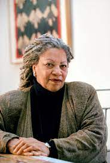

Toni Morrison is my preferred author, renowned for crafting a multitude of enthralling novels that have left an enduring mark on readers across the globe.
One of her best-known works is "The Bluest Eye (1970)," a novel filled with suspense and intrigue that keeps readers on the edge of their seats until the very last page.
Here is one of Toni Marrison quetues, "We die. That may be the meaning of life. But we do language. That may be the measure of our lives."
To delve deeper into Toni Marrison and her literary creations, visit her official website by clicking the link here.
Feel free to reach out to me via email at huguesbolembe1@gmail.com for any inquiries.
